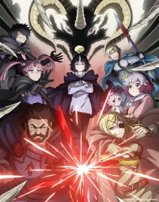

Tra pagine
e mondi.
Un episodio ancora. Un altro capitolo.
Le storie, i viaggi e la collezione di Xuthar.

ClevatessStagione 2Lo sto guardando adessoQuesta sezione viene aggiornata quando Xuthar comunica cosa sta guardando.
Ogni storia, un nuovo universo.
Esplora la collezione, scopri i voti di Xuthar e salva le storie che ti incuriosiscono.
Un mondo in movimento.
Avventure, emozioni e un altro episodio.
Esplora gli anime ↗Storie tra le mani.
Dal primo capitolo all’ultimo scaffale.
Entra nel mondo manga ↗Cosa guardo stasera?
Un consiglio a sorpresa dalla lista «Da vedere» di Xuthar. Scegli il tuo ritmo, al resto pensa Yume.
Sto preparando i consigli…
Solo opere già uscite. I titoli segnati «Lo salto» nelle Seasons di questo browser sono esclusi. La conclusione riguarda la singola stagione, non l’intero franchise.
Gli anime che Xuthar sta seguendo.
Una stagione, tante nuove storie.
Summer, Autumn e Winter: copertine, trame e streaming in Italia.
La libreria delle possibilità.
La lista di Xuthar
Nessuna storia qui, per ora.
Prova un titolo diverso o modifica i filtri.
Il prossimo volume, in calendario.
Uscite italiane e inglesi, settimana per settimana. Date documentate e aggiornamento automatico ogni lunedì.
Esplora le uscite manga e novel ↗Il tuo prossimo episodio.
Uscite in streaming italiano, orari e piattaforme, giorno per giorno. Il calendario si aggiorna automaticamente.
Esplora il calendario anime ↗Le storie hanno anche un suono.
Una sezione dedicata alla musica giapponese. BiSH, Niji no Conquistador, Aimer, AiNA THE END, Ikimonogakari, YOASOBI, milet e ano: storie, dischi e canzoni da esplorare. E una Top 500 dedicata alle opening ed ending degli anime.
Entra nel mondo J-pop ↗Le storie passano.
Le emozioni restano.
Un viaggio nei mondi preferiti di Xuthar,
un anime e un manga alla volta.